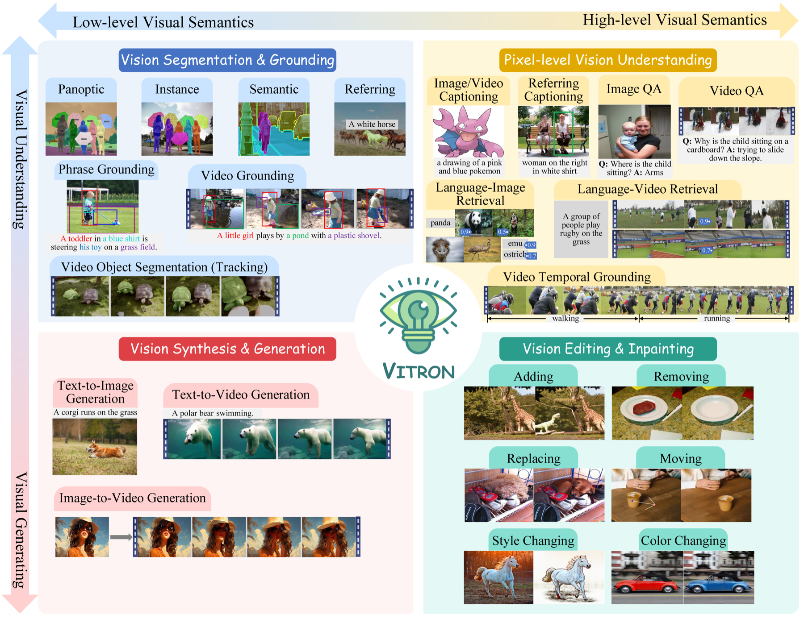

Vitron: A Unified Pixel-level Vision LLM for Understanding, Generating, Segmenting, Editing
Vitron is a universal pixel-level vision LLM spanning static images and dynamic videos across four major vision task clusters. Vitron pushes toward a multimodal visual generalist by combining image, video, and regional encoders with backend specialists under an LLM backbone. It is designed to support visual comprehension, generation, segmentation, and editing in a single system, while preserving precise message passing between language reasoning and visual execution.
- Hybrid instruction passing with discrete text and continuous signal embeddings.
- Pixel-level spatiotemporal alignment for fine-grained visual capability.
- Cross-task synergy learning across 12 tasks and 22 datasets.
